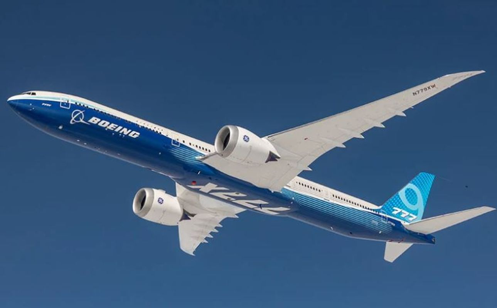
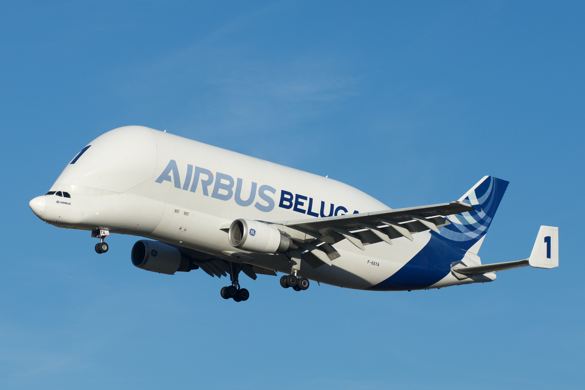
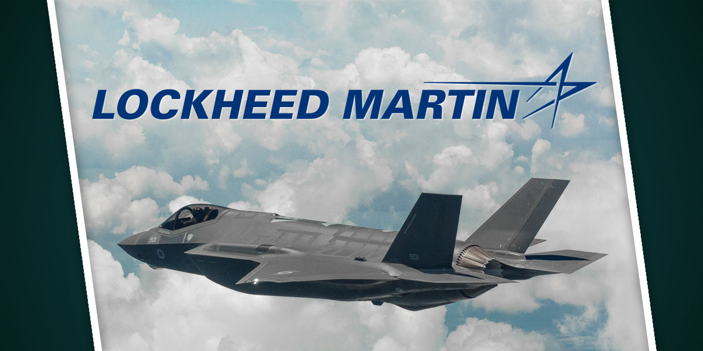
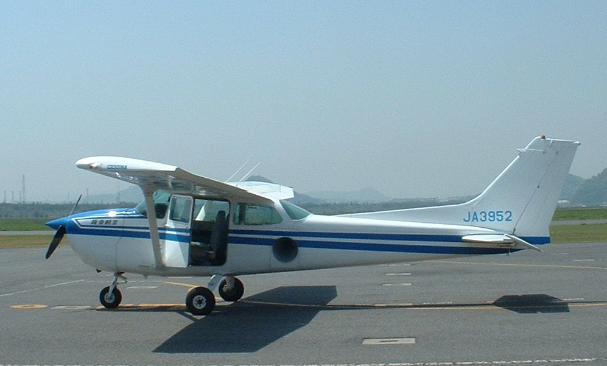
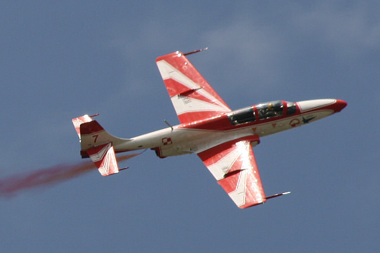
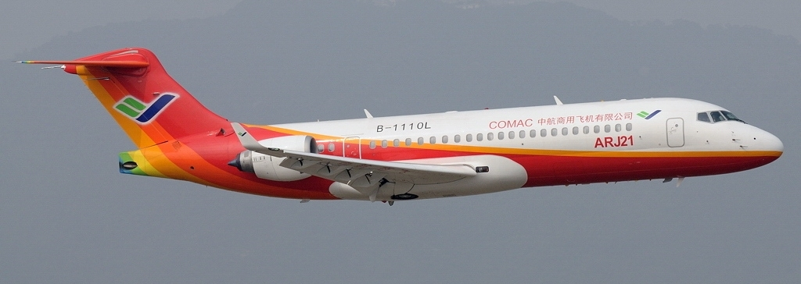

Firm, które produkują samoloty jest wiele, lecz nie wszystkie produkują te same typy samolotów.
Niektóre firmy produkują samoloty pasażerskie, a niektóre wojskowe.

Boeing produkuje różne typy samolotów i śmigłowców, przeznaczonych zarówno dla wojska, jak i służb cywilnych.
Uczestniczy w programach badania kosmosu, produkując zespoły i podzespoły do rakiet nośnych, sztucznych satelitów i statków kosmicznych.

Airbus S.A.S. – przedsiębiorstwo zajmujące się produkcją samolotów, spółka zależna Airbus Group (dawniej EADS). Siedziba koncernu znajduje się w Tuluzie we Francji.
Airbus zatrudnia około 130 tysięcy pracowników w 180 miejscach na całym świecie.

Lockheed Martin Corporation – amerykański koncern zbrojeniowy powstały w 1995 z połączenia korporacji Lockheed i Martin Marietta. Jeden z „wielkiej piątki” amerykańskiego przemysłu obronnego.
Lockheed Martin jest jednym z największych na świecie dostawców uzbrojenia. W 2009 r. 74% dochodów pochodziło od Departamentu Obrony Stanów Zjednoczonych i innych agencji federalnych, oraz kontrahentów zagranicznych.

Cessna Aircraft Company – jeden z najbardziej znanych producentów lekkich samolotów (nazywanych dawniej Columbia). Historia firmy sięga początków XX w., kiedy to w 1911 r. Clyde Cessna, farmer zamieszkały w USA, wybudował drewniany samolot i przeleciał nim jako pierwszy trasę pomiędzy rzeką Missisipi oraz Górami Skalistymi.
Sukces biznesowy jest zasługą jego wnuka – Dwane’a Wallace’a.

Polskie Zakłady Lotnicze Sp. z o.o. (PZL Mielec) – największe zakłady lotnicze w Polsce, znajdujące się w Mielcu w województwie podkarpackim. Powstały w 1938 roku jako zakład WP-2 Państwowych Zakładów Lotniczych. Po II wojnie światowej stały się największą polską wytwórnią lotniczą, budując samoloty głównie na eksport i nosząc od 1949 roku nazwę WSK Mielec (Wytwórnia Sprzętu Komunikacyjnego), a następnie WSK „PZL-Mielec”.
W 1998 roku w wyniku restrukturyzacji stały się niezależnym podmiotem gospodarczym. Od 2007 roku spółka zależna amerykańskiego Sikorsky Aircraft Corporation (obecnie Lockheed Martin Helicopter Company). Tereny przedsiębiorstwa znajdują się w Specjalnej Strefie Ekonomicznej Euro-Park Mielec.

Commercial Aircraft Corporation of China, Ltd. (Comac) (chiń. 中国商用飞机有限责任公司) – chiński państwowy producent samolotów założony 11 maja 2008. Siedziba główna znajduje się w Pudong w Szanghaju.
Kapitał zakładowy spółki wynosi 19 mld RMB (2,7 mld USD w maju 2008 r.). Korporacja jest projektantem i konstruktorem dużych samolotów pasażerskich o pojemności ponad 150 pasażerów, starając się zmniejszyć zależność Chin od Boeinga i Airbusa.